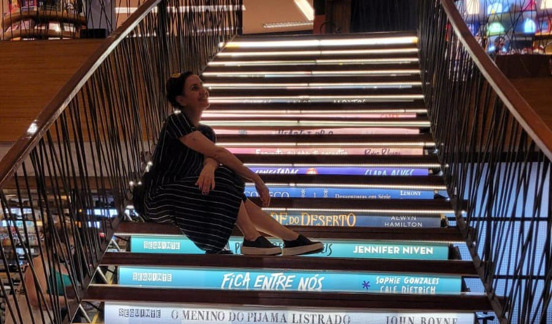

07 de fevereiro de 2023.

Em transição de carreira.
Por 20 anos trabalhei ensinando as pessas a dirigir, deixando meus sonhos e crescimento profissional de lado, pois a necessidade de sustento era maior.
Final de 2022 resolvi dar uma guinada em minha vida, resolvi aprender a programar.
Nesse meio de caminho ouve muitos desânimos, por achar que não era pra mim,
mas sempre persisti e algo que não passa por minha cabeça é desistir.
SEREI UMA DESENVOLVEDORA não tenho dúvidas.
Nessa caminhada conto com a Rocketseat, me ajudando para o conhecimento necessário.